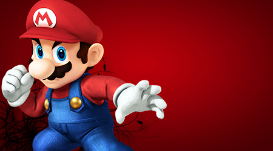
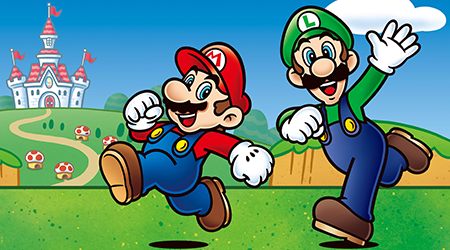
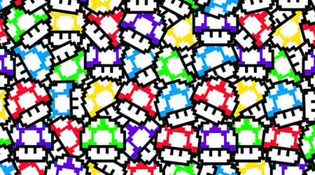
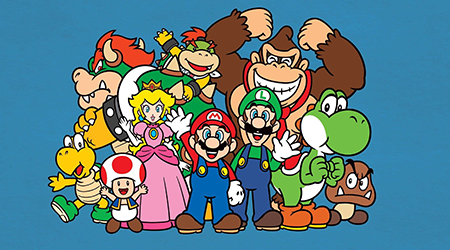

It's a me! Mario!
Congratulations!
Click on the image to watch the secret video.
About
-
He attacc, he protecc, but most importantly, he fix your plumbing.
 -
He also a good fella. Always there for his friends.
 -
He sometimes eats all dem mushrooms and gets high.
 -
But he always comes bacc to save the princess Peach.
